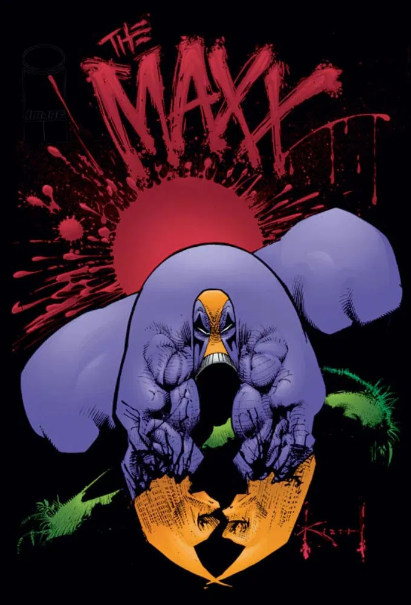

Favorite Images


The Maxx is a weird, gritty, and surprisingly emotional animated series that feels like a fever dream in the best way. It jumps between reality and a strange “Outback” world, and I love how it mixes dark humor with genuinely thoughtful moments. The art style is bold and unique, and the show never plays it safe.
The Maxx IMDB ReviewsThe Dead Milkmen are my go-to band when I want smart, sarcastic punk that doesn’t take itself too seriously. Their songs are funny, catchy, and full of attitude, but they also have a sharp way of poking at culture and everyday nonsense. I like that they sound raw and energetic without trying to be polished.
The Dead Milkmen Offical Website| Thing | Why it’s fun to smash | Smash Rating (1–10) |
|---|---|---|
| Vending Machine | No Snickers Bar | 9 |
| Old Computer Monitor | Blue Screen of Death | 8 |
| Photo Copier | For those Office Space guys | 7 |
| Pinata | CANDY!!! | 6 |